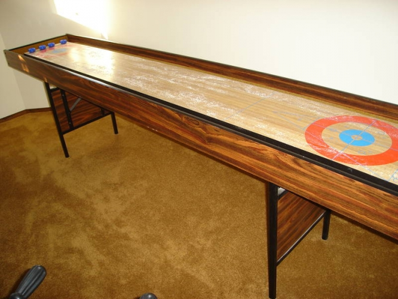

This
site is dedicated to the documentation and supplemental information to
restore a Bobwood Shuffelboard Table.. I acquired the game
via craigslist in Canada.

So this is a very basic table, nothing too crazy here. It will fold up
nicely for storage and has leveling legs on it. This is a 10 foot table.
One
thing I like about this table and the reason I purchased it was that it
has all three major games lined out on the table. It includes the
"knockoff" American 1,2,3 scoring. It also has the Curling markings and
the classic "deck" or "outdoor" shuffleboard scoring.
The only
reason this page exists is that I wanted to share my shuffleboard rules
document I created, this document has standard 8.5x14" paper (cheap
frame compatible) so that you can print the rules for all three
versions of shuffleboard and frame them like a bar would on the wall.
Anyone else who has nice documents charges for them and they never
cover anything but knock off/American shuffel rules.
Shuffelboard Rules